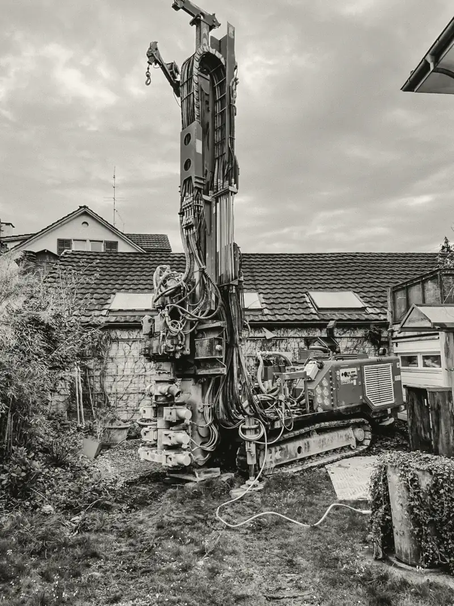
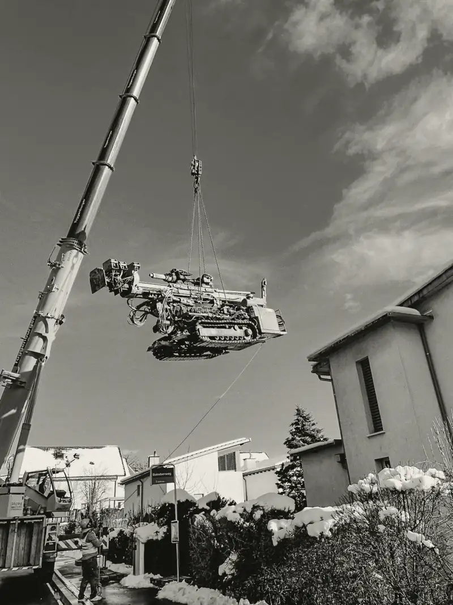
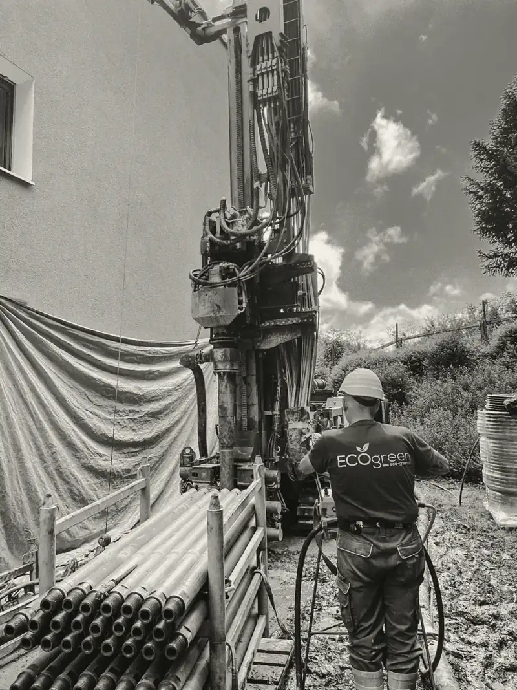
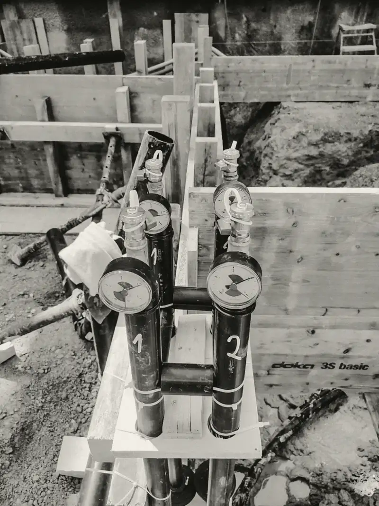

Sondenauslegung
Anzahl und Tiefe der Sonden, gerechnet für Ihr Haus.
Eco Green bohrt Erdwärmesonden für Ein- und Mehrfamilienhäuser im Kanton Zürich. Von der Abklärung bis zur angeschlossenen Sonde, mit eigenen Geräten und eigenem Bohrteam.

Im Kanton Zürich darf eine fossile Heizung in einem bestehenden Haus seit 01.09.2022 grundsätzlich nur noch durch ein erneuerbares System ersetzt werden. Öl und Gas kosten jedes Jahr. Die Wärme aus dem Boden kostet nichts, Sie bezahlen nur den Strom für die Pumpe.
Seit diesem Tag gilt im Kanton Zürich: erneuerbar ersetzen.
der ersetzten fossilen Heizungen wurden im ersten Jahr durch klimaneutrale ersetzt.
hat der Boden ab etwa 15 Metern Tiefe, im Winter wie im Sommer.
Ein Rohr in einem Bohrloch von 150 bis 250 Metern. Eine Flüssigkeit zirkuliert darin und nimmt die Wärme des Bodens auf.
Sie hebt die Temperatur auf das Niveau Ihrer Heizung. Rund drei Viertel der Wärme stammen aus dem Boden, der Rest ist Strom.
Bodenheizung oder Radiatoren werden versorgt wie bisher. Im Sommer kann die Sonde das Haus leicht kühlen.
Die Wärmepumpe liefert Ihr Heizungsinstallateur. Alles, was im Boden liegt und zur Sonde gehört, machen wir.
Anzahl und Tiefe der Sonden, gerechnet für Ihr Haus.
Situationsplan und Angaben für das Gesuch an die Gemeinde.
Mit eigenen Raupenbohrgeräten, wenn nötig per Kran über das Haus.
Dicht verfüllt, damit das Grundwasser geschützt bleibt.
Mit Druck geprüft und bis in den Heizraum verlegt.
Betriebsbereit an Ihren Installateur übergeben.
Von der ersten Anfrage bis zur Übergabe vergehen meist zwei bis drei Monate. Die Bohrung selbst dauert wenige Tage.
Wir prüfen im Wärmenutzungsatlas, ob auf Ihrer Parzelle gebohrt werden darf, und schätzen Anzahl und Tiefe der Sonden.
Sie erhalten eine feste Offerte für Bohrung und Anschluss. Damit reichen Sie das Fördergesuch beim Kanton ein.
Das Gesuch geht über Ihre Gemeinde an das AWEL. Wir stellen die Unterlagen zusammen. Gebohrt wird erst, wenn Bewilligung und Fördergesuch stehen.
Wir bohren, bauen die Sonde ein und verfüllen das Bohrloch dicht. Ihre Nachbarn wissen eine Woche vorher Bescheid.
Druckprobe jeder Sonde, Leitungen bis in den Heizraum, Befüllung mit Wärmeträgerflüssigkeit.
Sie erhalten Bohrprotokoll und Rechnung für die Auszahlung des Förderbeitrags. Ihr Installateur schliesst die Wärmepumpe an.
Das AWEL empfiehlt Bauherrschaften eine Bohrfirma mit diesem Siegel. Für den Förderbeitrag verlangt es der Kanton.
Gütesiegelliste ansehen


So viel zahlt der Kanton an eine Erdwärmepumpe bis 15 kW, die eine Öl-, Gas- oder Elektroheizung ersetzt. Darüber kommen CHF 420 pro kW dazu.
Wichtig: Das Gesuch muss vor der Bohrung eingereicht sein. Und es verlangt eine Bohrfirma mit gültigem Gütesiegel. Beides klären wir mit Ihnen vor dem ersten Bohrtag.
Bedingungen und UnterlagenQuelle: Kanton Zürich, Förderprogramm Heizung ersetzen. Das Programm läuft 2026 unverändert weiter.
Ein Einfamilienhaus braucht oft 8 bis 15 kW. Die genaue Leistung steht in der Offerte Ihres Installateurs.
CHF 6'800
Höchstens 50 Prozent der Investition und 50 Watt pro m² Energiebezugsfläche. Massgebend ist die Zusicherung des Kantons.
Laut, aber planbar. Bohrgerät und Kompressor hört man in der Nachbarschaft. Wir bohren Montag bis Freitag zu festen Zeiten, nie am Wochenende, und informieren Ihre Nachbarn eine Woche vorher schriftlich.
Die Bohrung selbst dauert pro Sonde meist ein bis zwei Tage, dazu ein Tag für Auf- und Abbau. Von der ersten Anfrage bis zur Übergabe vergehen meist zwei bis drei Monate. Die meiste Zeit braucht die Bewilligung.
Das Raupengerät fährt auf Platten, damit Rasen und Zufahrt geschützt bleiben. Bohrschlamm fangen wir in Mulden auf. Nach der Arbeit bleibt nur ein kleiner Schacht mit dem Sondenkopf. Ist die Zufahrt zu eng, hebt ein Kran das Gerät über das Haus.
Das hängt von der Anzahl Sondenmeter ab, und die richten sich nach Ihrem Haus. Sie erhalten nach der Abklärung eine feste Offerte. Der Kanton Zürich zahlt beim Ersatz einer Öl-, Gas- oder Elektroheizung ab CHF 6'800 an die Anlage.
Das zeigt der Wärmenutzungsatlas des Kantons Zürich für jede Parzelle. Wir prüfen das vor der Offerte. Liegt eine Sonde näher als 2,5 Meter an der Grundstücksgrenze, braucht es die Zustimmung Ihres Nachbarn.
Ein Einfamilienhaus braucht oft eine oder zwei Sonden von 150 bis 250 Metern. Wie viele und wie tief, berechnen wir aus Wärmebedarf und Untergrund. Im Kanton Zürich reichen Erdwärmesonden meist bis höchstens 500 Meter.
Jede Erdwärmesonde braucht eine gewässerschutzrechtliche Bewilligung des AWEL. Eingereicht wird bei der Baubehörde Ihrer Gemeinde, auch über eBaugesucheZH. Wir stellen die Unterlagen für Sie zusammen.
Die Fachvereinigung Wärmepumpen Schweiz vergibt es an Bohrfirmen, die Beratung, Sondenmaterial, Ausführung und Sicherheit nach ihren Vorgaben erfüllen. Das AWEL empfiehlt solche Firmen. Für den Förderbeitrag verlangt der Kanton eine Bohrfirma mit gültigem Gütesiegel.
Schicken Sie uns Adresse und heutige Heizung. Wir klären, ob gebohrt werden darf, und melden uns mit einer ersten Einschätzung zu Sonde, Ablauf und Förderbeitrag. Kostenlos.